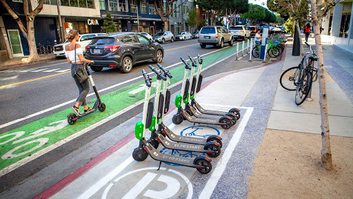

We are suggesting the use of docking zones, as in the photo displayed above. We recommend a partnership with local governments and e-scooter companies to introduce the use of RFID (Radio Frequency Identification) & GPS technology to enforce zones
Successful micromobility systems typically have a density that minimizes walking time to a scooter. The goal of making dense systems is to reduce the additional time cost incurred by walking to and from a scooter station; an ideal system would be one where the user has to walk no more than 2 minutes to reach a scooter dock. This is why our proposed approach prioritizes smaller and more frequent stations over larger and more spread out ones. While we will have larger stations in our network, these larger stations will be located at major hubs where there is a high demand for scooters.
However, when analyzing census data in the city of LA, we realized that there were many different densities and neighborhoods throughout the county. Thus, we could not take a one-size-fits-all approach for the number of scooters in each neighborhood. Some areas would inherently have more demand for scooters, while other ares would have lower demand. Some types of land use, such as the mixed-use area of Downtown Los Angeles, and the student neighborhood of University Park, would generate more trips and thus warrant a higher density of scooters per 1000 people. Additionally, even on a sub-neighborhood level, different blocks may have different uses. Using the example of University Park, the "USC Village" is a high-density, mixed-use, student-oriented development that would likely require multiple large stations in close proximity to one another, while 30th Street and Figureoa has a low-density commercial use that generates fewer trips.
Thus, when making our density calculations, we decided to supplant the residential density with additional information we gathered from other demographic sources; we found that mixed-use neighborhoods and neighborhoods with "educational" centers see a large influx of people during the work/school day. This impacts the density of the neighborhood significantly. For example, the residential density of downtown Los Angeles is 8000 ppl/sq mi, but the fact that there are 500,000 jobs in downtown Los Angeles, of which at least 60% are during the day, gives downtown Los Angeles a density of over 50,000 ppl/sq mi during peak (working) hours. Thus, we used the "peak-hour density" when determining the minimum ratio per 1000 people for scooter stations.
Finally, rather than calculating specific ratios by neighborhood, we decided to provide a baseline ratio of scooters per 1000 people guideline for various land-uses using a decision matrix. This will make it easier to scale our scooter implementation plan to different areas. Our decision matrix is below.
| Neighborhood Type | Ratio of scooters per 1000 people |
| Industrial | 10 |
| Commercial(primarily) | 20 |
| Residential Mixed use | 30 |
| Young Population Urban Mixed Use | 35 |
| University/Mixed Use Walkable | 40 |
To calculate the amount of ridership in each neighborhood, we first adjusted the population based on the proximity to landmarks that we identified. Examples of this include schools, universities, and transit stations. We assigned values to these various locations, which serve as multipliers for the population. Using LA census tract data, we calculated the new population for the impacted census tracts. From here, we used a baseline assumption of 15% of the population being interested in using scooters, as it fits their mode type. While this model doesn't account for specific commute or push/pull factors, we believe that we can get a more useful estimate of ridership.